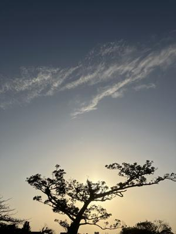
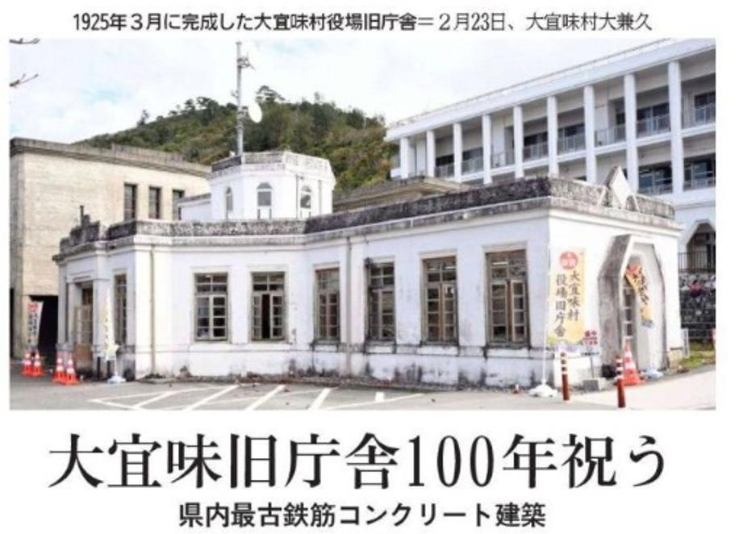
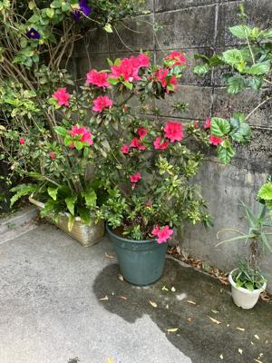

うるがいの話 ある日
最新: 大腿骨骨折【うるがいの話 ある日】とは 一日だけのプログです
『うるがいの話』の最新一日だけのプログで、通信料が少なく経済的だ。カニの画像をクリックすると全ての日付が載る『うるがいの話』サイトを表示します
|
|
【うるがいの話】 うるがい(ｳﾙｶﾞｲ urugai)とは、『もずくがに』の名前でとても大きくなります。 |
|---|---|
|
|
【カミマヤーの話】 猫のことを方言でマヤーといいます。カミマヤー（kamimayaa）とは、神の猫のことです。 |
|
【たながぁの音楽】 たながぁ（ﾀﾅｶﾞｰ tanagaa）とは手長えびのことで、何種類かあり大きいのは車 エビぐらいになります。 |

|
【ぶながぁの話】 ぶながぁ(ﾌﾞﾅｶﾞｰ bunagaa)とは、赤い髪の毛、赤い身体、そして身長は１ｍ２０ｃｍ ぐらい、川の蟹を食べているの目撃された。場所は沖縄県国頭郡大宜味村のと ある村僕の隣近所に住んでいる爺さんから、聞いた話です。 |
|
|
【ギーマの話】 ギーマ(giima)とは、山原の里山に咲くスズランに似た、 花を付けます。実は食べられます、 気が付くと口の周りが紫になっています。 |
2026年03月07日 (土）大腿骨骨折
15:55

ヨメのお義母さんの妹（９２歳）が、先週転んで大腿骨骨折した
。神奈川県に居る娘が、看病のため先週の木曜日から沖縄に来て
入院している小母さんを看護している。きのう、一人で家にいる
叔父さん家にヨメと一緒に、ヨメの従妹と会う。９０歳になる叔
父さんは、元気でなりよりです。一時期は起きられないのではと
思っていたが、小母さんは来週、退院するため一所懸命リハビリ
を頑張っているようです。ただ、従妹は一度、神奈川に戻りたい
と、その間誰が世話をするのでしょう。同じ敷地内に住んでいる
もとバレーボール選手のお義母さんの妹（９０歳）が、対応する
とのこと。フムフム、これから大変だべ。従妹の同じ年頃の旦那
さんは、自分の母親の介護を、数年前から一人で行っているとこ
と。いやー、大変である。

中学生時代に役場の屋上に登って、メジロを鳥もち竿で獲ってい
ました。役場の隣には、大きなガジュマルの木があり、たくさん
のメジロがいました。この前１００周年記念式典をしたと報道し
ていました。
こんな、凄い建物とは知りませんでした。旧役場の裏は、かつて
は山があり、山の裏には畑がありました。私が中学生の頃、山を
切り崩して、新しい役場を作りました。そしてその役場を壊し、
さらに令和５年５月に新しい役場ができました。まだ、その役場
には入ったことはありません。
